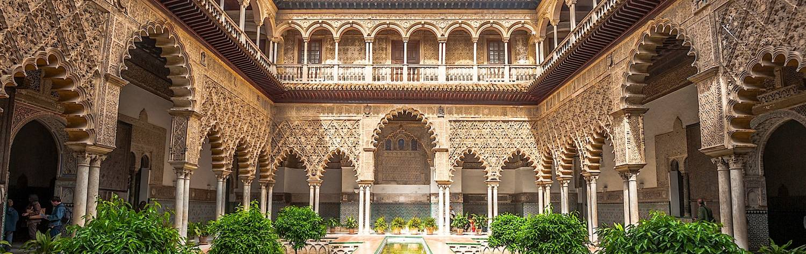

Once the most powerful country in the world, Spain basks in the glory of its past.
The legendary Moorish kingdom of Andalusia was a beacon of civilization during the Middle
Ages, and the Habsburg dynasty that ruled Spain in the 15th and 16th centuries built an
empire that extended across Europe to the Americas, Africa and Asia – ensuring that Spanish
would become the world’s second most spoken native language. Today, Spain’s old superpower
status and superlative wealth live on in its spectacular historic buildings and monuments –
and in the vast quantities of gold that still decorate its churches.
After the Golden Age of the 17th century, Spain began a slow political decline and
more recently has struggled economically. However, the country’s glorious historic legacy
makes for an endlessly intriguing visit. With its magnificent monuments, beautiful beaches,
majestic mountains, and sophisticated social life, Spain enchants millions of visitors
every year. Many travelers can’t get enough and keep coming back
.
From cosmopolitan Barcelona to romantic Andalusia, Spain is filled with attractions
that offer a veritable feast for the senses. In every city, you’ll find buildings that
amaze and inspire: from the immense Gothic cathedral of Seville to the glorious Baroque
buildings of Madrid, and Barcelona’s breathtaking Sagrada Familia basilica – an epic 130-year
building project that is finally nearing completion.
The culinary culture is as rich as it is regionally varied: from exotic tapas and rich
red wines, to lively food festivals, long lunches, and – of course – afternoon siestas.
To truly experience Spain, you must adapt to its rhythm and way of life. Adjust to the later
meal times and take advantage of the nightlife. Learn about the religious festivals and join
the locals at the piazzas. Sunbathe at the beaches and save time for museum visits.
Be adventurous and sample the local cuisine, from tangy cold gazpacho soups to whole roast
suckling pig. Watching a bullfight is a possibility, while chatting with the locals is
mandatory – and will always make your trip more memorable.
